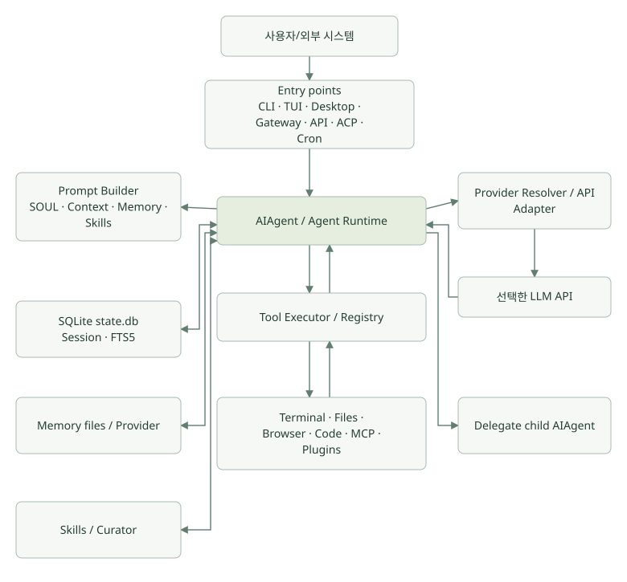
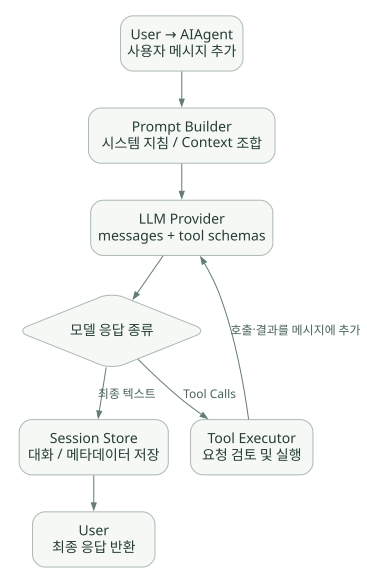

큰 그림 / 단원 02
요청이 실행되는 전체 경로
입력 → 모델의 판단 → 도구 실행 → 관찰 → 응답
먼저 연결해 보기
Agent의 실행은 모델을 한 번 호출하는 것으로 끝나지 않을 수 있습니다. 모델이 도구 호출을 요청하면 Runtime이 실행 정책을 확인하고 결과를 돌려줍니다. 모델은 그 결과를 보고 다음 행동이나 최종 답변을 선택합니다. 이 반복이 Agent Loop입니다.
아래 구조도에서는 구성요소의 관계를, 호출 흐름도에서는 시간에 따른 실행 순서를 읽으세요. Provider Adapter는 이 흐름을 선택한 모델 API 형식에 맞추는 경계입니다. 도구 실패, 중단, 반복 예산 초과는 정상 종료와 따로 확인해야 합니다.
읽는 관점Tool Call은 요청 데이터입니다. 함수 실행의 주체와 권한 확인 위치를 찾아보세요.
4. Hermes 전체 아키텍처#
공식 개발 가이드가 설명하는 주요 컴포넌트를 단순화하면 다음과 같다. S02
넓은 도식은 가로로 스크롤하여 읽을 수 있습니다.

[개념도] 원문의 연결 관계를 보존해 다시 배치했습니다. 실제 구현의 모든 호출·보안 경계를 표시한 그림은 아닙니다. 도식 크게 보기 ↗
연결 관계 원문 (Mermaid)
flowchart TD
U[사용자/외부 시스템] --> E[Entry points\nCLI · TUI · Desktop · Gateway · API · ACP · Cron]
E --> A[AIAgent / Agent Runtime]
A --> P[Prompt Builder\nSOUL · Context · Memory · Skills]
A --> R[Provider Resolver / API Adapter]
R --> L[(선택한 LLM API)]
L --> A
A --> T[Tool Executor / Registry]
T --> X[Terminal · Files · Browser · Code · MCP · Plugins]
X --> T
T --> A
A <--> S[(SQLite state.db\nSession · FTS5)]
A <--> M[Memory files / Provider]
A <--> K[Skills / Curator]
A --> D[Delegate child AIAgent]핵심 설계 원칙
- CLI와 메신저 등의 차이는 입출력 어댑터에 두고, 실제 작업 처리 코어는
AIAgent로 공유한다. - Provider Resolver가 모델/엔드포인트/인증 및 API 모드 차이를 흡수한다.
- Tool Registry가 LLM에게 노출할 도구 스키마와 실제 함수를 연결한다.
- 세션(SQLite), 영구 메모리(files), Skills(directory)는 별도 계층이다.
- 게이트웨이와 일정 작업은 Agent 실행을 요청하는 진입점일 뿐 모델 자체가 아니다.
4.1 가장 먼저 읽을 소스 파일 지도#
| 파일 | 책임 | 학습 시 질문 |
|---|---|---|
run_agent.py |
AIAgent 공개 진입 facade |
호출자는 무엇을 알고 무엇을 몰라도 되는가? |
agent/conversation_loop.py |
주요 Agent 반복 루프 | 언제 LLM을 다시 호출하고 멈추는가? |
agent/turn_*.py |
Turn 준비·API·오류·복구 등의 단계 | 반복 루프가 어떻게 세분화되었는가? |
agent/prompt_builder.py |
프롬프트 구성 | Memory·Skill·Context가 어디에서 합쳐지나? |
agent/tool_executor.py |
Agent 수준의 도구 실행 | 특수 도구는 왜 여기서 가로채는가? |
model_tools.py |
도구 발견·스키마·호출 라우팅 | 모델 요청과 실제 Python 함수를 어떻게 연결하나? |
tools/registry.py |
Tool 등록·선택·dispatch | 미설치 도구를 어떻게 숨기나? |
hermes_state.py |
세션 DB facade | 복원·검색·경합을 어떻게 처리하나? |
agent/context_compressor.py |
컨텍스트 요약·압축 | 무엇을 유지하고 무엇을 손실하나? |
gateway/run.py |
플랫폼 이벤트 라우팅 | 동일 사용자/채널 세션을 어떻게 찾나? |
이 코어는 유지보수 과정에서 facade·mixin·helper로 계속 분리될 수 있으므로 파일 하나가 구현의 전부라고 생각하지 않는 것이 중요하다.
5. Agent Loop: Hermes가 '생각하고 행동'하는 핵심#
5.1 쉬운 설명#
사용자: '파일을 읽고 이상값을 요약해줘'
↓
Agent가 사용 가능한 도구 목록과 대화 기록을 모델에 제공
↓
LLM: '먼저 파일을 읽어야겠다' → read_file Tool Call 생성
↓
Hermes: 권한 확인 → 읽기 도구 실행 → 결과를 메시지로 추가
↓
LLM: '추가 계산이 필요하다' → 코드 실행 Tool Call
↓
Hermes: 안전한 실행환경에서 실행 → 결과를 메시지로 추가
↓
LLM: 최종 분석 글 생성
↓
Hermes: 응답 반환 및 세션 보존중요한 구분: Tool Call은 LLM이 생성한 실행 요청 데이터이고, 실제 함수 호출은 Hermes가 한다. LLM이 코드나 SQL 실행권한을 자동으로 갖는 것이 아니다.
5.2 공식적인 Turn lifecycle#
공식 Agent Loop 문서의 핵심 순서를 요약하면 S04:
task_id준비, 사용자 메시지 append- 시스템 프롬프트 생성 또는 이미 고정된 프롬프트 재사용
- 선제적 Context 압축 여부 확인
- 내부 메시지를 모델 API에 적합한 메시지 형식으로 변환
- 반복 횟수·컨텍스트 압박 등 이번 호출에 필요한 일시 정보 추가
- 지원 공급자라면 prompt cache markers 적용
- 취소 가능한 모델 API 호출
- 모델 응답 분석: Tool Call → Tool 실행 후 루프 반복 / 최종 텍스트 → 종료·저장
넓은 도식은 가로로 스크롤하여 읽을 수 있습니다.

[개념도] 원문의 호출 순서를 정상 실행 중심으로 재구성했습니다. 오류·중단·예산 종료는 아래 본문을 함께 읽으세요. 도식 크게 보기 ↗
연결 관계 원문 (Mermaid)
sequenceDiagram
participant U as User
participant A as AIAgent
participant P as Prompt Builder
participant L as LLM Provider
participant T as Tool Executor
participant S as Session Store
U->>A: user message
A->>P: system prompt / context
P-->>A: assembled prompt
loop Tool Calls가 남고 예산 내에 있는 동안
A->>L: API request(messages, tool schemas)
L-->>A: text 또는 tool_calls
opt tool_calls
A->>T: validated tool requests
T-->>A: tool results
Note over A: assistant tool_calls + tool results append
end
end
A->>S: transcript / metadata
A-->>U: final answer5.3 메시지 저장 형식#
Hermes 내부는 공통적으로 OpenAI 스타일 메시지 표현을 사용하고, 다른 공급자 API에는 Adapter를 통해 변환한다. S04
{"role":"user","content":"CSV를 분석해줘"}
{"role":"assistant","tool_calls":[{"id":"call1","type":"function","function":{"name":"read_file","arguments":"{\"path\":\"data.csv\"}"}}]}
{"role":"tool","tool_call_id":"call1","content":"...file contents..."}
{"role":"assistant","content":"분석 결과는 ..."}위 JSON은 구조를 보여주는 예제다. 실제 메시지에는 API 모드·미디어·추론 메타데이터 등이 추가될 수 있다. 도구 호출을 저장했다면 맞는 tool_call_id의 결과를 연계해야 하고, 역할 순서도 공급자 요구에 맞춰 유지해야 한다.
5.4 반복 종료 및 실패 경로#
| 상황 | Hermes의 주요 처리 |
|---|---|
| 모델이 최종 텍스트를 반환 | 답변·세션 저장 후 종료 |
| 모델이 Tool Calls 반환 | 실행·결과 append·다음 모델 호출 |
| Tool 실행 오류 | 오류를 모델이 읽을 수 있는 Tool 결과 형태로 포장 |
| 사용자 중단 | interrupt/cancel 경로로 현재 응답 폐기 또는 작업 중단 |
| 모델 API 오류 | Retry·인증 갱신·설정된 fallback 공급자 시도 |
| 반복 예산 초과 | 더 이상 무한 반복하지 않고 진행 상태를 요약해 종료 |
| Context 길이 문제 | 압축·초과 대응·오류 복구 경로 사용 |
공식 문서상 Agent Loop의 일반 최대 반복 예산은 설정 가능한 500회, 별도 자식 Agent 예산의 기본값은 50회로 설명된다. 이것은 무조건 500번 호출한다는 뜻이 아니고, 실행 제한의 기본값이다. 상위/하위 예산은 서로 독립적이므로 단순 합계를 상위 500회에 묶는다고 가정하면 안 된다. 구현 버전별 기본값은 재확인한다. S04
5.5 병렬 도구와 병렬 Agent는 다르다#
- 병렬 Tool Call: 한 모델 응답에 여러 Tool Call이 있을 때 Hermes가
ThreadPoolExecutor등으로 동시에 처리한다. 상호작용 도구는 순차 실행할 수 있다. 결과는 원래 요청 순서에 맞춰 합친다. - 병렬 Subagent: 서로 다른
AIAgent인스턴스가 각각의 Context·Task를 갖고 분석한다.
따라서 모델이 두 파일을 동시에 읽는 것과, 전문 Agent 두 명에게 서로 다른 분석 과제를 맡기는 것은 실행·비용·상태 관리 차이가 크다. S04, S14
6. LLM Provider와 API Adapter#
Hermes는 하나의 LLM 공급자만을 전제로 하지 않는다. 공유 런타임 계층이 (provider, model)을 API 모드·키·base URL 등으로 해석한다. S03
| API mode | 주 용도 | 핵심 차이 |
|---|---|---|
chat_completions |
OpenAI 호환 Chat Completions | 일반적인 messages + tools 인터페이스 |
codex_responses |
OpenAI Responses 계열 | Response input item·tool 형식 변환 |
anthropic_messages |
Anthropic native Messages API | 메시지 및 도구 명세·캐시 적용 차이 |
Provider 해석 우선순위는 명시적 런타임 선택 → config.yaml → 환경변수 → 공급자 기본값으로 안내되어 있다. Provider별 세부설정은 공급자 플러그인·레지스트리 구조를 통해 확장할 수 있다. S03
반도체 환경에서 중요한 질문: 회사가 제공하는 LLM Gateway가 OpenAI 호환 API라면 Hermes의 chat_completions 경로로 연결하는 방안을 검토할 수 있다. 그러나 URL만 맞는다고 끝나는 것이 아니다. Tool Calling, Streaming, Context 길이, 오류 응답, 인증 헤더, 모델 기능의 실제 호환성 테스트가 필수다.